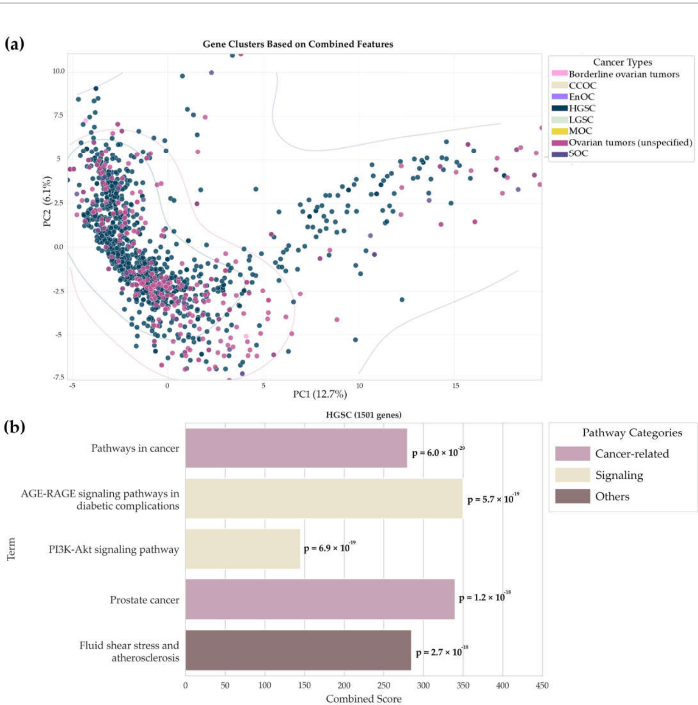
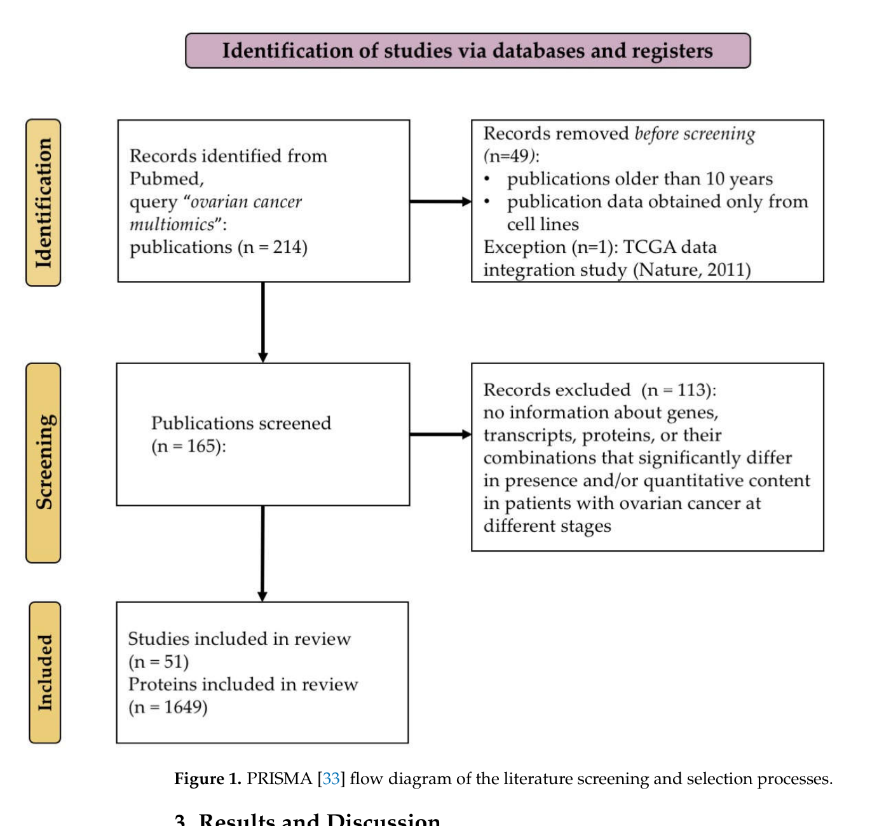
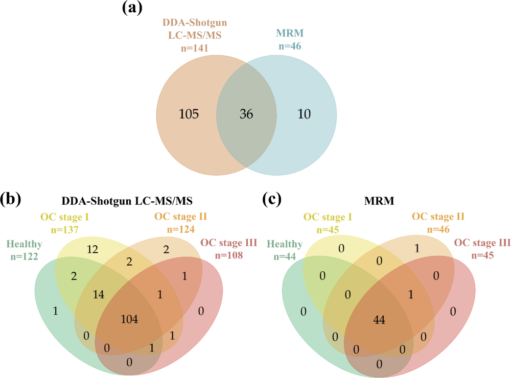
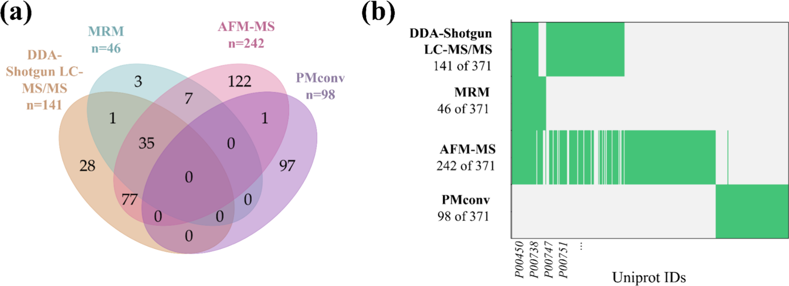
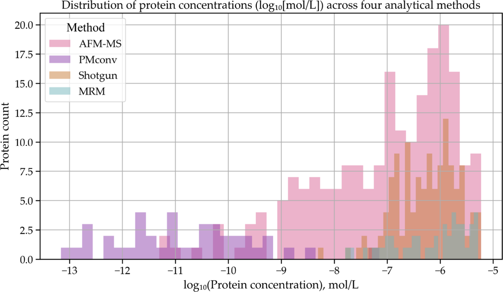

I. Инфраструктура: УНУ «Авогадро»
Работа выполнена в рамках Уникальной научной установки «Авогадро» ФГБНУ ИБМХ им. В.Н. Ореховича — для исследования биосистем на уровне единичных биомакромолекул и определения белков в низких и сверхнизких концентрациях.
Стратегическая задача установки: высокочувствительные постгеномные подходы к гетерогенным заболеваниям на основе протеомики, мультиомных данных, физико-химических методов и машинного обучения.
Модельная система — высокозлокачественный серозный рак яичников (HGSC): высокая летальность, молекулярная неоднородность, поздняя диагностика, отсутствие устойчивых одиночных белковых биомаркёров.
Центральная гипотеза: молекулярная гетерогенность
Эпителиальный рак яичников — не одно заболевание. Гистологические подтипы различаются механизмами канцерогенеза, молекулярными нарушениями, чувствительностью к терапии и прогнозом. Общий термин «рак яичников» и маркёры CA-125 и HE4 не отражают эту неоднородность.
| Подтип | Доля | Ключевые нарушения | Клиника |
|---|---|---|---|
| Высокозлокачественная серозная карцинома (HGSC) | ~52% | TP53, BRCA1/2, дефицит гомологичной рекомбинации, геномная нестабильность | Наиболее агрессивный; часто поздние стадии |
| Эндометриоидная | ~10% | CTNNB1, PTEN, ARID1A, MSI | Более благоприятный прогноз |
| Светлоклеточная | ~6% | ARID1A, PIK3CA | Резистентность к платине |
| Низкозлокачественная серозная | ~4% | KRAS, BRAF, RAS/MAPK | Медленный рост |
| Муцинозная | ~3% | KRAS, HER2 | Специфический профиль |
Основная модель проекта — HGSC (серозная трубная интраэпителиальная карцинома, TP53, HRD, субтипы: иммунореактивный, дифференцированный, пролиферативный, мезенхимальный).
Состояние области
Систематический анализ 51 мультиомной публикации (2014–2024), ручная экстракция 1649 кандидатных молекул (гены, белки, транскрипты, метаболиты, эпигеномные признаки).
«Эффект поиска под фонарём»: исследователи находят молекулы, доступные текущим технологиям, а не обязательно наиболее значимые для опухоли. В плазме HGSC значимые белки могут быть на уровне 10⁻¹⁰–10⁻¹² моль/л, тогда как стандартный МС плазмы — преимущественно 10⁻⁶–10⁻⁸ моль/л.
Нерешённая задача: воспроизводимая методология, объединяющая литературу, плазменную протеомику, тканевые белки и машинное обучение.


Трёхуровневая стратегия исследования
1 Систематизация данных и PMconv
Проект РНФ № 24-74-10098 — «Подходы глубокого машинного обучения для интеграции мультиомиксных данных» (Ильгисонис Е.В., Ключникова А.А.).
Систематический обзор по PRISMA (PROSPERO CRD420250614341). База 1649 кандидатов с аннотацией по подтипу, стадии, направлению изменения, методу и числу образцов.
Инструмент PMconv сопоставляет метаболиты и белки через метаболические пути. Для HGSC: 12 метаболитов → 98 белков путей (таурин, жирные кислоты, полиамины, аминокислоты). Многие из них труднодоступны для прямого МС в плазме.
Ключевые публикации: Int. J. Mol. Sci. 2025, 26(13), 5961 — DOI 10.3390/ijms26135961
2 Сверхчувствительная протеомика плазмы
Атомно-силовая микроскопия + масс-спектрометрия (АСМ/МС): чип с фотоактивным бензофеноновым кросслинкером, ковалентный захват белков плазмы, УФ-активация, ферментативное расщепление, LC-MS/MS элюатов.
Диапазон детекции 10⁻⁶–10⁻¹² моль/л (на 2–4 порядка чувствительнее стандартного МС плазмы). Межиндивидуальная вариабельность на донорах <8%. Когорта: HGSC стадий I–III и здоровые контроли. Данные в PRIDE: PXD068982.
| Метод | Диапазон | Белков | Уникальных |
|---|---|---|---|
| Тандемная МС (DDA-Shotgun) | 10⁻⁶–10⁻⁸ | 141 | — |
| Мониторинг заданных реакций (MRM/SRM) | 10⁻⁶–10⁻⁸ | 46 | 10 |
| АСМ/МС | 10⁻⁶–10⁻¹² | 242 | 123 |
| PMconv | ~10⁻¹¹ | 98 | 97 |
Всего уникальных белков в интеграции: 371. Общих для трёх протеомных платформ: 35. Около 33% белков выявлены только АСМ/МС.
Новые плазменные кандидаты HGSC:
Иммуноглобулиновые пептиды учтены, но рассматриваются как низкоспецифичные кандидаты.
J. Proteome Res. 2025, 24(12), 6203–6214 — DOI 10.1021/acs.jproteome.5c00758


3 Тканевые белки PRIDE и машинное обучение
Интеграция мультиомиксных данных и ML — в рамках проекта РНФ № 24-74-10098 (Ильгисонис Е.В., Ключникова А.А.).
Четыре независимых набора из репозитория PRIDE, всего 180 образцов (130 ткань + 50 микровезикул). Матрица 9 610 × 180 белков, z-score внутри проекта, без импутации. Отобрано 2 701 «коровых» белков (coverage 100% во всех образцах).
Валидация LOPO (Leave-One-Project-Out): обучение на части проектов, тест на независимом. Сравнено 4 стратегии × 6 алгоритмов = 24 модели — подробности и скрипты: репозиторий анализа PRIDE.
| Модель / подход | AUROC | Чувствительность | Специфичность |
|---|---|---|---|
| Логистическая регрессия L2 (LOPO) | 0,984 ± 0,023 | 86% | 100% |
| Случайный лес, tissue-only LOPO | 0,957 [0,92–0,98] | 84% | 97% |
| Universal markers (194 белка) | 0,916 | — | — |
Permutation p = 0,010. Сравнение с CA-125 / HE4 / OVA1: протеомная панель сопоставима или выше (AUROC до 0,957).
Обогащённые пути: эндоплазматический стресс, UPR, окислительное фосфорилирование, митохондриальный апоптоз, цикл Кребса.
194 белка сонаправленно изменены в ткани и биологических жидкостях.
9 приоритетных тканевых кандидатов:

Совокупность результатов
- Верифицированная база 1649 кандидатных молекул эпителиального рака яичников
- Обоснован фокус на HGSC и ограниченность одиночных маркёров
- Инструмент PMconv для связи метаболома и протеома
- Метод концентрации и МС-детекции плазмы на чипах, диапазон до 10⁻¹² моль/л
- Новые плазменные маркёры и панель с высокой разделяющей способностью (ROC до 0,979)
- Межлабораторный классификатор тканевых сигнатур (LOPO AUROC 0,984)
- 194 согласованных белка ткань + жидкость; 9 приоритетных для дальнейшей валидации
Научная значимость и перспективы
Создана воспроизводимая методология поиска молекулярных сигнатур на модели HGSC — с возможностью переноса на другие гетерогенные опухоли с низкокопийными белками в крови.
Практика: жидкая биопсия на основе белковых панелей (ранняя диагностика, стратификация, новые диагностические наборы).
Инфраструктура: ФГБНУ ИБМХ им. В.Н. Ореховича · УНУ «Авогадро» · Соглашение №075-15-2021-933 · ibmc.msk.ru
Основные публикации по проекту
- Kliuchnikova A. et al. Ovarian Cancer: Multi-Omics Data Integration. Int. J. Mol. Sci. 2025;26(13):5961. 10.3390/ijms26135961
- Sarygina E.V. et al. Advancing Plasma Proteomics for the Discovery of Ovarian Cancer Biomarkers. J. Proteome Res. 2025;24(12):6203–6214. 10.1021/acs.jproteome.5c00758
- Gordeeva A.I. et al. MS Identification of Blood Plasma Proteins Concentrated on a Photocrosslinker-Modified Surface. Int. J. Mol. Sci. 2024;25(1):409. 10.3390/ijms25010409
- Gordeeva A.I. et al. MS analysis of proteins on AFM chips from blood plasma. BBA Proteins and Proteomics 2026;1874:141057. 10.1016/j.bbapap.2026.141057
Код, экспериментальные данные и воспроизводимость
Открытый репозиторий с пайплайном машинного обучения на протеомных данных PRIDE (уровень 3 проекта):
github.com/aziz122596/project_ovarian_cancer
В репозитории: скрипты анализа (scripts/01–07), методология, таблицы метрик, списки белков, описание входной матрицы (9610×180, z-score без импутации, 2701 «коровых» белков).
Данные PRIDE
| ID | Материал | n | Назначение |
|---|---|---|---|
| PXD068982 | Плазма крови | когорта HGSC I–III + контроль | Уровень 2: DDA, MRM, АСМ/МС (J. Proteome Res. 2025) |
| PXD033741 | Ткань | 110 | ML, LOPO |
| PXD009655 | Микровезикулы | 50 | ML, universal markers |
| PXD012998 | Ткань | 14 | ML, LOPO |
| PXD025864 | Ткань | 6 | ML, LOPO |
Обзор мультиомики: PROSPERO CRD420250614341
Ключевая статистика (ткань + ML, репозиторий кода)
Логистическая регрессия L2 (LOPO): AUROC 0,984 ± 0,023 (чувствительность 86%, специфичность 100%) — по итогам интеграции проекта. Сравнение 4 стратегий × 6 алгоритмов ML — в RESULTS.md.
9 приоритетных кандидатов (пересечение топ-100 RF и universal): SEC11A, TMCO1, SHMT2, ACAA1, MTA2, IL4I1, OCIAD2, DTX3L, THEM6.